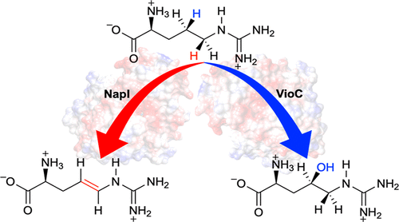

Peer-reviwed Journal Articles
2023
Hafiz Saqib Ali, Richard Henchman
Physical Chemistry Chemical Physics, 2023, 25, 27524-27531.

Hafiz Saqib Ali, Jim Warwicker, Sam P. de Visser
ACS Catalysis, 2023, 13, 10705–10721.
Thesis
Systems for Collective Human Curation of Online Discussion.
Amy X. Zhang
MIT Ph.D. Thesis
August 2019
 George Sprowls Award
George Sprowls Award
[pdf]